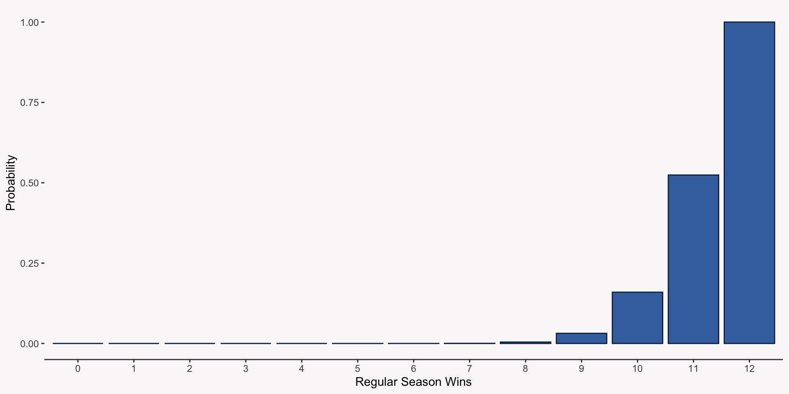

Hope you all had a refreshing summer!
Extend the regression model in two ways:
Probability is the language of uncertainty.
Anytime we are dealing with random events such as the outcome of a coin toss or the response to a survey question, we rely on probability to talk about these events.
Probability theory is built on three rules:
When dealing with two or more random variables, we can describe the probability of multiple events happening using joint probabilities and conditional probabilities:
roll_2
roll_1 1 2 3 4 5 6
1 0.03 0.03 0.03 0.03 0.03 0.03
2 0.03 0.03 0.03 0.03 0.03 0.03
3 0.03 0.03 0.03 0.03 0.03 0.03
4 0.03 0.03 0.03 0.03 0.03 0.03
5 0.03 0.03 0.03 0.03 0.03 0.03
6 0.03 0.03 0.03 0.03 0.03 0.03Two or more events are independent when the occurrence of one event has no impact on the occurrence of the other events:
\(P(A|B) = P(A)\)
If you roll a pair of dice, is the first roll independent of the second?
roll_2
roll_1 1 2 3 4 5 6
1 0.17 0.17 0.16 0.16 0.17 0.17
2 0.17 0.18 0.18 0.16 0.17 0.16
3 0.17 0.17 0.17 0.16 0.16 0.18
4 0.15 0.18 0.17 0.16 0.17 0.17
5 0.16 0.17 0.16 0.18 0.16 0.17
6 0.16 0.17 0.16 0.17 0.17 0.18Probability Mass and Density Functions (PMF & PDF, respectively) are functions that take the value of a random variable as an input and output the probability of that value occurring. Every statistical model we will use will assume a certain PMF or PDF.
The Bernoulli Distribution is a PMF used for a random variable that takes on two different values:
\[p(\text{Win}) = \pi^{Y}(1-\pi)^{1 - Y}\] \[\pi = \text{Probability UGA Wins}\] \[Y = \text{1 if they win, 0 if they lose}\]
\[p(\text{Win}) = .25^{Y}(1-.25)^{1 - Y}\]
The binomial distribution is a PMF used for a random variable that is the count of successes of n independent experiments/trials (multiple, independent Bernoulli variables):
UGA’s record under their current head coach: 94-16 (94%). So let’s say they have a 94% chance of winning each game – what does the probability distribution of their 12 game season win-loss record look like?
The Cumulative Distribution Function (CDF) specifies the probability that a random variable takes a value, Y, or any value less than Y (think of percentiles).
\[F(\text{UGA Record = 10}) = P(\text{UGA Record} \le 10)\]
The simple linear regression model we’ve seen before:
\[Y_i = \beta_0 + \beta_1X_{i1} + \epsilon_i\] \[\epsilon_i \sim N(0, \sigma)\]
Rewriting linear regression as a probability model:
\[P(Y_i|X_{i1})=N(\beta_0 + \beta_1X_{i1}, \sigma)\]
# A tibble: 10,000 × 2
ht sex
<dbl> <chr>
1 70.7 M
2 67.9 M
3 73.6 M
4 68.4 M
5 67.0 M
6 71.2 M
7 67.5 M
8 68.8 M
9 63.9 M
10 69.9 M
# ℹ 9,990 more rowsHow do we translate our model results into a probability model?
Call:
lm(formula = ht ~ sex, data = data_ht)
Residuals:
Min 1Q Median 3Q Max
-11.1388 -1.8635 0.0065 1.8557 11.6430
Coefficients:
Estimate Std. Error t value Pr(>|t|)
(Intercept) 63.68069 0.04038 1576.85 <2e-16 ***
sexM 5.39268 0.05610 96.13 <2e-16 ***
---
Signif. codes: 0 '***' 0.001 '**' 0.01 '*' 0.05 '.' 0.1 ' ' 1
Residual standard error: 2.803 on 9998 degrees of freedom
Multiple R-squared: 0.4803, Adjusted R-squared: 0.4803
F-statistic: 9242 on 1 and 9998 DF, p-value: < 2.2e-16Conceptualizing linear regression as a probability model allows us to generalize the ideas of linear regression to a larger number of probability distributions than just the normal distribution.
It opens up the world of Generalized Linear Models, which we will become more familiar with throughout the semester.
You want to understand the impact that an employee’s job demands and resources have on their work engagement.
# A tibble: 6 × 4
job_demand job_res part_time eng
<dbl> <dbl> <chr> <dbl>
1 0.341 -1.14 no 1.30
2 -0.703 -1.02 no 3.39
3 -0.380 -0.575 no 1.38
4 -0.746 -0.0909 yes 6.44
5 -0.898 -0.0192 no 4.52
6 -0.335 -1.51 no 3.20What does the output below tell us about the relationships between engagement and job demands and job resources?
Call:
lm(formula = eng ~ job_demand + job_res, data = data_jdr)
Residuals:
Min 1Q Median 3Q Max
-10.5697 -1.7671 0.0077 1.6561 10.1450
Coefficients:
Estimate Std. Error t value Pr(>|t|)
(Intercept) 3.80444 0.05883 64.67 <2e-16 ***
job_demand -0.98796 0.05832 -16.94 <2e-16 ***
job_res 0.91971 0.06021 15.28 <2e-16 ***
---
Signif. codes: 0 '***' 0.001 '**' 0.01 '*' 0.05 '.' 0.1 ' ' 1
Residual standard error: 2.631 on 1997 degrees of freedom
Multiple R-squared: 0.2053, Adjusted R-squared: 0.2045
F-statistic: 258 on 2 and 1997 DF, p-value: < 2.2e-16While adjusting for a worker’s level of job resources, for every one unit increase in job demands, worker engagement should decrease by .99 units, on average.
While adjusting for a worker’s level of job demands, for every one unit increase in job resources, worker engagement should increase by .92 units, on average.
Overall, our model accounts (or explains) 20% of the variance in worker engagement.
Statistical significance asks the question: “If I believe the null hypothesis is true (usually no effect), what is the probability that my estimate would be this large or larger?”
The p-value (probability value) tells us this probability and it is up to us to decide if the probability is small enough for us to reject the null hypothesis (usually if the probability is less than .05).
Significance testing relies heavily on the concepts of standard errors, test statistics, and null distributions:
data_jdr |>
dplyr::select(job_demand, job_res, eng) |>
dplyr::mutate(
prediction = predict(mod_engage),
error = mod_engage$residuals
)# A tibble: 2,000 × 5
job_demand job_res eng prediction error
<dbl> <dbl> <dbl> <dbl> <dbl>
1 0.341 -1.14 1.30 2.42 -1.12
2 -0.703 -1.02 3.39 3.56 -0.172
3 -0.380 -0.575 1.38 3.65 -2.28
4 -0.746 -0.0909 6.44 4.46 1.98
5 -0.898 -0.0192 4.52 4.67 -0.156
6 -0.335 -1.51 3.20 2.75 0.452
7 -0.501 -0.585 7.61 3.76 3.85
8 -0.175 -1.76 1.13 2.36 -1.23
9 1.81 1.39 4.99 3.30 1.70
10 -0.230 0.545 7.03 4.53 2.49
# ℹ 1,990 more rowsThe \(R^2\) can be calculated by squaring the correlation between our model predictions of the outcome variable and the actual values of the outcome variable.
Although it was developed for normal linear models, the \(R^2\) can still be a helpful measure of fit for generalized linear models.
To use a categorical predictor with K groups in a regression model, you have to transform the variable into K - 1 indicator variables (variables that only take on 0 and 1 values), where the group coded as 0 is referred to as the reference group:
For a model where the only predictor is the indicator variable:
Call:
lm(formula = eng ~ part_time, data = data_jdr)
Residuals:
Min 1Q Median 3Q Max
-12.6198 -1.8585 0.0857 1.9740 9.7262
Coefficients:
Estimate Std. Error t value Pr(>|t|)
(Intercept) 3.99385 0.07345 54.372 < 2e-16 ***
part_timeyes -0.95968 0.16125 -5.951 3.13e-09 ***
---
Signif. codes: 0 '***' 0.001 '**' 0.01 '*' 0.05 '.' 0.1 ' ' 1
Residual standard error: 2.924 on 1998 degrees of freedom
Multiple R-squared: 0.01742, Adjusted R-squared: 0.01693
F-statistic: 35.42 on 1 and 1998 DF, p-value: 3.13e-09An interaction effect allows us to test if the impact of a predictor variable on an outcome variable changes at different levels of another predictor variable:
The relationship between job demands and engagement is strong and negative when job resources are low, but weak, and likely non-significant, when job resources are high.
Too Much of a Good Thing Effect (Vitamins are good for you unless you take a lot at once!)
Call:
lm(formula = eng ~ job_demand * job_res, data = data_jdr)
Residuals:
Min 1Q Median 3Q Max
-9.6683 -1.7158 0.0427 1.6745 10.3648
Coefficients:
Estimate Std. Error t value Pr(>|t|)
(Intercept) 3.80063 0.05794 65.591 < 2e-16 ***
job_demand -0.96718 0.05750 -16.821 < 2e-16 ***
job_res 0.92433 0.05930 15.588 < 2e-16 ***
job_demand:job_res 0.47113 0.05949 7.919 3.94e-15 ***
---
Signif. codes: 0 '***' 0.001 '**' 0.01 '*' 0.05 '.' 0.1 ' ' 1
Residual standard error: 2.591 on 1996 degrees of freedom
Multiple R-squared: 0.2295, Adjusted R-squared: 0.2284
F-statistic: 198.2 on 3 and 1996 DF, p-value: < 2.2e-16